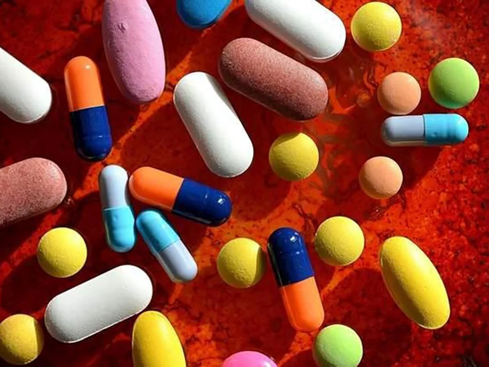
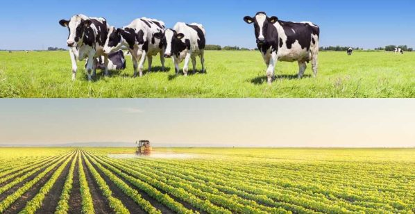
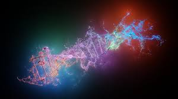
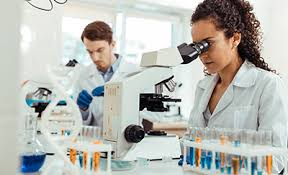

¿Que es la Biotecnologia?
Llevamos la biotecnología literalmente en los genes y, aun así, no
deja de sorprendernos con sus continuas innovaciones, casi más propias de
la ciencia ficción. El espíritu revolucionario de aquellos avances anteriores
a la creación del término como la fermentación del pan, el queso o el vino se
ha mantenido intacto hasta hoy, más de 6.000 años después, justo cuando el ser
humano se pregunta dónde estará el techo, si es que lo hay, de esta tecnología
que podría llevarnos muy lejos el día de mañana.
La biotecnología utiliza células vivas para desarrollar o manipular
productos con fines específicos, como por ejemplo los alimentos transgénicos.
La biotecnología está así vinculada con la ingeniería genética y surgió como
disciplina a principios del siglo XX en la industria alimentaria, a la que
después se sumaron otros sectores como la medicina o el medio ambiente.
Hoy, las cinco ramas en las que se divide la biotecnología moderna humana, ambiental,
industrial, animal y vegetal nos ayudan a combatir el hambre y las enfermedades,
producir de forma más segura, limpia y eficiente, reducir nuestra huella ecológica
y ahorrar energía. El aumento en la inversión y en el empleo en este sector ha sido
exponencial en los últimos años, reflejando su creciente impacto económico y su
importancia en el desarrollo sostenible y la innovación tecnológica a nivel global.
Usos y Aplicaciones
El ingeniero agrónomo húngaro Karl Ereky, él quien adopto el término
biotecnología para describir esa fusión de la biología con la tecnología, describe
en una frase la importancia de la biotecnologia en nuestra vida cotidiana.
"Construir un nuevo organismo es más fácil que fabricar un Blackberry".
La biotecnologia a llegado para quedarse, con sus diveros impactos en
la sociedad, contribuyendo con la evolucion del mundo y su manera de ejercer
sus activiaddes, cada vez demostrando que la ciencia y las tecnologia son los
mejoes aliados de la innovacion. Estas son algunas de las aplicaciones mas
relevanes de la biotecnologia en la actualidad:
La aplicación de la biotecnología y la microbiología se enfoca especialmente
en células procariotas o eucariotas, enzimas y proteínas relevantes, genética
aplicada y biotecnología molecular, genómica y proteómica, fisiología microbiana
y celular aplicada, biotecnología ambiental, procesos, productos y más.
meidicina
El desarrollo de la insulina, la hormona del crecimiento, la identidad y el diagnóstico
molecular, las terapias génicas y vacunas como la de la hepatitis B son algunos de los
hitos de la biotecnología y su alianza con la ingeniería genética. Además, también
se utiliza en el diagnóstico de enfermedades debido a su capacidad para hacer pruebas muy
complicadas en un tiempo y coste menor.
VACUNAS: Una de las más importantes aplicaciones de la biotecnología la encontramos
en las vacunas, cuya singular relevancia tiene un rol protagónico en la actualidad.
En esencia, se trata de sustancias químicas que estimulan el sistema inmune del
cuerpo humano para combatir los patógenos que atacan al organismo. Para lograrlo,
en el torrente sanguíneo del cuerpo humano se insertan versiones inactivas, atenuadas
o debilitadas de la enfermedad. Esto hace que el organismo active sus procesos naturales
de reacción para defenderse, independientemente de la debilitación del agente en cuestión.
Así, el cuerpo combate los patógenos debilitados y, a través de ese proceso, crea un registro
de la estructura celular de los patógenos con los que ha luchado.
Posteriormente, cuando la enfermedad realmente ataca y ahora el cuerpo se enfrenta a sus patógenos
sin la atenuación que sí tenía la vacuna, el cuerpo los reconoce, los identifica y activa sus mecanismos
de defensa en función de la información con la que ya contaba. El resultado de la contienda es una
recuperación
más veloz, con síntomas más leves. Para poder producir estas vacunas, los patógenos de las enfermedades
atenuadas se extraen utilizando técnicas de biotecnología, como el cultivo de proteínas antigénicas
en cultivos que fueron modificados genéticamente. Un buen ejemplo es el desarrollo de vacunas contra
el linfoma folicular utilizando plantas de tabaco modificadas genéticamente para exhibir ARN de células
B malignas (activamente cancerosas).
ANTIBIOTICOS: Como sucede con las vacunas, la producción de antibióticos sin los cuales no
podríamos concebir la medicina
como lo hacemos hoy, representa otro de los más importantes usos de la biotecnología. Es que todo antibiótico,
un producto biotecnológico en sí mismo, es capaz de inhibir el crecimiento bacteriano o directamente
eliminar bacterias y determinadas clases de microorganismos sensibles, uno de los mayores avances
en la historia de las ciencias.
Biosanitaria: para obtener fármacos, diagnosticar enfermedades, vacunas y terapias celulares, identidad
molecular.

Alimento
Además de los alimentos transgénicos que mencionamos anteriormente, gracias a la tecnología biológica se han
creado productos como el maíz WEMA, un tipo de cultivo resistente a las sequías y a ciertos insectos que puede
ser fundamental para luchar contra el hambre en África.
AGRICULTURA Y GANADERIA : para desarrollar cultivos y mejorar cosechas y alimentos, además
de
conseguir resistir
a plagas y enfermedades. Con herramientas y metodologías de biotecnología es posible reducir nuevas variedades
de plantas con más rapidez que antes, con tolerancia a condiciones ambientales adversas, características
nutricionales
mejoradas, resistencia a herbicidas, plagas, etc. Se utiliza en los sistemas de diagnósticos de enfermedades;
en
uso de
organismos vivos o sustancias producidas para mejorar la productividad de cultivos o control de plagas.
También,
en el cultivo
de células y tejidos in vitro para producir plantas a gran escala; en cultivos genéticamente modificados;
conservación de
germoplasma; estudios de diversidad, evolución genética de poblaciones y programas para la mejora.

Industria
La revolución de los nuevos materiales inteligentes de la mano de
la biotecnología no ha hecho más que empezar, con la principal ventaja de
que puede realizar productos fácilmente degradables.
Productos así ayudan al medioambiente debido a que generan menos desechos en
el momento de su destrucción, como es el caso de los plásticos biodegradables.
OBTENCION DE MATERIAS PRIMAS: A través del manejo de ciertas especies
animales, vegetales o de microorganismos, podemos tener acceso
a materiales que sólo ellos son capaces de hacer, como hemos hecho desde hace
siglos con la leche de las vacas o la seda de las mariposas, materia prima para la
industria láctea o textil, respectivamente. Lo mismo puede hacerse a nivel microscópico
con ciertos tipos de carbohidratos, útiles para la farmacéutica; o con la celulosa de las
plantas, útil como materia prima para biocombusibles. Mejora genética o ingeniería genética.
Manipulando la información genética de especies microscópicas, podemos “programarlas” para
sintetizar sustancias deseadas de manera masiva, o bien para transmitir a otras células
algún tipo de información codificante (hay terapias que usan a los virus como inyectadoras
celulares), e incluso podemos diseñar embriones animales y vegetales dotados de rasgos
novedosos que beneficien, a nuestro criterio, a la especie en su totalidad.
Biotecnología verde o agrícola. Aquella que tiene que ver con el sector agropecuario de
la
cadena
productiva y que busca incidir en la alimentación humana, a través de la obtención de especies más
productivas,
más resistentes o con nuevas propiedades adicionales.
Biotecnología azul o marina.Se dedica a la exploración de los océanos y sus diversos
ecosistemas como una
fuente posible de materiales biotecnológicos de importancia.
Biotecnologia blanca o industrial. Es aquella que se interesa por la obtención de
energía,
materiales o catalizadores aprovechables
por el ser humano, tales como biorreactores, biocombustibles, etc.
Biotecnología gris o ecológica. A diferencia de las demás, su principal objetivo es la
preservación del medio
ambiente, a través del diseño y la producción de soluciones para desastres medioambientales, como la
contaminación
o los derrames petroleros, entre otros.
Biotecnología dorada o informática. Constituye el ala electrónica e informática de todos
estos procesos, que se hermana
con la computación para diseñar mecanismos de procesamiento de información de origen biológico.
Biotecnología marrón o del desierto. Al igual que la marina, comprende los desiertos como
importantes fuentes de
recursos biotecnológicos aprovechables por la humanidad.
Biotecnología naranja o informativa. Cumple con una función divulgativa y pedagógica, al
transmitir de la mejor
manera posible las actividades benéficas de la biotecnología, y también educar sobre sus riesgos.
Biotecnologia amarilla o nutricional. Aquella que se dedica a la industria alimentaria, o
sea, a la obtención de alimentos más
sanos, resistentes, nutritivos y/o sabrosos, mediante la incorporación de elementos de origen biológico.
Biotecnologia púpura o legal. Consiste en la rama legal, jurídica y ética del conjunto
de
la
biotecnología, encargada de regular
las actividades de las demás ramas para que se lleven a cabo de manera ética.
Biotecnologia negra o bélica. La más peligrosa de todas y la más inmoral, es la que
concierne al desarrollo de armas biológicas,
destinadas a la guerra o al bioterrorismo. Sus consecuencias bien pueden ser catastróficas e impredecibles.
¿Que son las Tecnologias del ADN?
Muchos ejemplos de la biotecnología moderna dependen de la capacidad de analizar, manipular, cortar y
pegar
fragmentos de ADN. Las técnicas mediante
las que se secuencia y manipula el ADN se suelen denominar tecnologías del ADN.
Por ejemplo, para el ensayo de terapia génica contra fibrosis quística, los investigadores utilizaron
técnicas de manipulación de ADN
para insertar el gen del canal de cloruro en un fragmento de ADN portador (un vector) que le permitió
expresarse en la fibrosis quística.
células pulmonares humanas. Las tecnologías del ADN son importantes en la biología básica y aplicada
(práctica). Por ejemplo, una técnica utilizada para hacer muchas copias de una>
secuencia de ADN, llamada
reacción en cadena de la polimerasa (PCR), se utiliza en muchas pruebas de diagnóstico médico y en
aplicaciones
forenses, así como en la investigación básica en el laboratorio.

La Biotecnologia Moderna
La biotecnología moderna está considerada como el equilibrio base entre la investigación biológica celular y
molecular. En ciertas
circunstancias puede ser utilizada en empresas e industrias que trabajan con microorganismos o células
vegetales,
e inclusive animales.
Estas deberían ser consideradas como un conjunto completo, aunque se esté buscando la manera de conseguir
nuevas
técnicas o formas para
lograr satisfacer las necesidades humanas.
Nace en la década de los 80; pertenece al conjunto denominado "Ingeniería
genética",
que su principal función
viene siendo el
alterar y transportar genes de un organismo a otro.
Ingeniería genética
Su mayor trabajo se basa en el mejoramiento de los cultivos; sus investigaciones surgen desde poder
transportar
el gen de una
bacteria a cualquier planta; tiene como finalidad que las plantas desarrollen una proteína que les permita
resistir tales bacterias.
También se debe aclarar que el suelo desarrolla el mismo sistema inmune.
Aporte de la biotecnología moderna
El procesamiento de los alimentos como los quesos, pan o yogurt, ha evolucionado con el tiempo, recibiendo
la
ayuda de los diversos
microorganismos que la ciencia se ha encargado de descubrir. En la actualidad se ha realizado un gran cambio
gracias a la biotecnología
moderna, donde el resultado es a gran escala y el aporte se desarrolla con eficacia.
Las vacunas pueden ser tanto una bendición como una “maldición”; estas presentan una gran cura para las
enfermedades desde temprana edad,
mas sin embargo, muchas personas están en contra debido al maltrato hacia los animales, pues ellos terminan
siendo los pilotos de prueba.
Ya no es así, se está elaborando un material sintético, e igualmente se están realizando estudios para
desarrollar vacunas que pueden ingerirse,
donde puede liberarse literalmente en el organismo, matando a todo tipo de enfermedad. Otras ventaja de esto
es
su almacenamiento, no es necesaria
su refrigeración, y continua conllevando a un fácil modo de transpórtala.
Cada día se deteriora mas nuestro planeta, para nadie es un secreto que la contaminación ambiental lideresa
esta
escala; se están incluyendo materiales
con plásticos obtenidos de fibras vegetales; así como también, las empresas de textiles amplían su
conocimiento
y
están utilizando enzimas en varios de
sus procesos. Consiguiendo que varios de sus residuos puedan ser reutilizados. El agua ha sido uno de los
mayores
afectados respecto a la polución; se
está ejecutando un microorganismo que trabajan directamente en el agua, donde se alimenta de cualquier residuo
contaminante que pueda tener, purificándola al mismo tiempo.
Importancia de la biotecnología moderna
La biotecnología nos presenta innumerables beneficios, ya que cada proceso de alguna manera juega un papel
importante en nuestra vida cotidiana;
gracias a esto, se ha mejorado la salud, pues aumentan el balance nutricional de los alimentos. Cabe aclarar
que
se están implementando los cultivos
transgénicos, aunque muchas personas han reaccionado de manera negativo ante estos, pues aseguran que no son
alimentos y simplemente son portadores
de más enfermedades. Logrando poco a poco erradicar la desnutrición.
